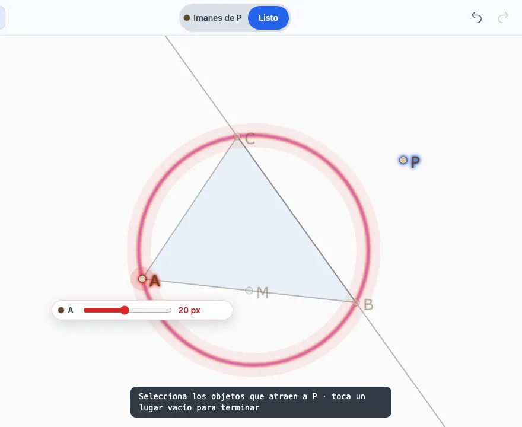

Imanes, chincheta y resorte
Imanes
Un punto libre imantado se pega a los objetos elegidos cuando se arrastra cerca de ellos, sin quedar ligado a ellos.

- Seleccionar el punto libre y luego Imanes. El resto de la figura queda bajo un velo.
- Tocar cada objeto que atrae (punto, recta, circunferencia, cónica, curva, lista): se vuelve rojo, con una atracción inicial de 20 px. El punto y sus dependientes quedan excluidos.
- Ajustar la atracción del imán elegido con el deslizador de su tarjeta: Ninguna (quita el imán), de 1 a 1000 px, En todas partes. La zona de atracción de cada imán se dibuja en rojo pálido.
- Terminar con un toque en un lugar vacío, Listo o Esc.
El punto se puede arrastrar durante el ajuste para probar. Cada ajuste es un paso de deshacer.
Chincheta
Fijar en la pantalla (punto libre, figura plana): el punto conserva su lugar en la ventana, y no sus coordenadas, cuando se hace zoom o se mueve la vista. Sigue siendo desplazable. Segunda pulsación: se retira.
Resorte
Animar (punto sobre recta, segmento, semirrecta, circunferencia, arco, polígono, cónica o lugar) saca bajo el punto un resorte terminado en una bola.
- Tirar de la bola y soltarla lanza el punto; durante la tracción, un fantasma del punto ya muestra el movimiento.
- Longitud: velocidad, por niveles mostrados (px/s en una recta, un polígono o una cónica; °/s en una circunferencia; % en un lugar).
- Lado: sentido; el punto sale en dirección opuesta a la tracción.
- De través respecto de una recta (más de 45°): ida y vuelta. En los demás casos, el punto da vueltas.
- Por debajo del primer nivel: parada.
En un punto ya animado, el resorte sale tenso a la velocidad actual. Segunda pulsación en : el resorte se guarda. Velocidad exacta, sentido inverso, parada en el extremo: sección Animación de las propiedades, que también anima los deslizadores.